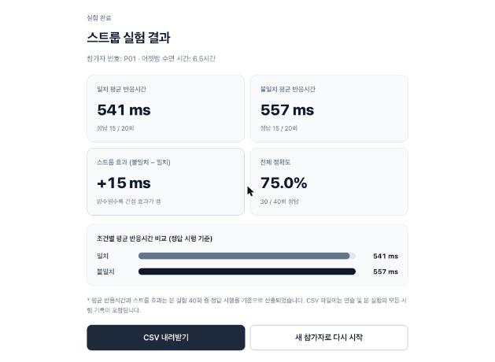

웹에서 쓰던 Gemini는 「물어보는 곳」이었다면, 맥 앱은 내 화면과 내 폴더 옆에서 같이 일하는 동료에 가깝습니다. 심리학 연구방법론 과제 하나(수면 시간과 스트룹 효과)를 처음부터 끝까지 맥 앱으로 해 봤습니다. 아래는 전부 실제 화면입니다.
과제 PDF를 연 채로 Gemini에 「화면 공유 → 창 선택」. 파일을 업로드할 필요 없이 지금 보고 있는 창을 그대로 넘깁니다.
배점 40점짜리 결과 보고부터 체크리스트가 나왔고, 「해석은 AI에 맡기지 않고 조원이 직접」 같은 안내문 속 유의 사항까지 챙겨 줬습니다.
앱 오른쪽 위 「Antigravity」를 열고 빈 폴더 하나를 맡겼습니다. 「스트룹 반응시간 실험 웹앱, 결과는 CSV로」라고 적자 에이전트가 파일을 만들고 스스로 끝까지 실행해 확인했습니다.

결과 화면: 일치·불일치 평균 반응시간, 스트룹 효과, 정확도, CSV 내려받기. (위 화면은 자동 테스트 실행 결과)
조원 단톡방에 링크 하나 보내면 모두가 같은 조건으로 실험에 참여할 수 있습니다.
데이터 표를 띄워 둔 채 그대로 공유하고 상관 분석과 보고 문장을 요청했습니다.
답: r(28) = −.51, p = .004. 저희가 따로 계산한 값(r = −.507, t = −3.11)과 같았습니다. 계산 과정을 같이 받아 두면 검산이 쉽습니다.
「보여 주지 않는 것」으로 인과관계, 피로·카페인 같은 교란 변수, 예시 데이터의 일반화 한계를 짚었습니다. 발표 질문에 미리 대비할 수 있는 지점입니다.
입력창 아래를 「작업」으로 바꾸고 과제 폴더를 연결했습니다. 과제 안내, 5·6주차 강의 자료, 그래프를 읽고 대본 파일을 폴더에 저장해 달라고 했습니다. 약 2분 뒤 6장 분량 5분 대본이 폴더에 생겼습니다.
강의 자료에 있던 「색각 이상 참가자 사전 확인」, 「오답 시행 제외」까지 방법 슬라이드에 들어갔습니다. 결과물: 발표대본_초안.md
같은 Antigravity에게 Blender 장면을 만드는 스크립트를 맡겼습니다. 에이전트가 렌더를 직접 보고 어색한 곳을 고쳐 다시 렌더하고, 회전 영상까지 만들었습니다(마을 약 20분, 책상 약 10분).
왼쪽: 「작고 둥근 동물들이 사는 파스텔 마을」 · 오른쪽: 「시험 기간 심리학과 학생의 책상」. 캐릭터와 소품은 모두 오리지널로 주문.
아래 파일을 받아 「심리학과-과제」 폴더에 넣고, 위의 질문들을 그대로 써 보세요. 모든 데이터는 가상 예시입니다.